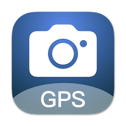

Exif GPS编辑器

功能介绍
这是一个可以为照片添加GPS信息的应用
目前市面上绝大部分的专业数码相机都没有携带GPS功能，拍摄出来的照片不携带位置信息，无法通过位置来管理。
Exif GPS编辑器可以为照片添加GPS信息，不仅可以记录照片拍摄的位置，还可以更好的查找和管理照片问完。

可以通过拖入照片文件或有照片的文件夹。
You can drag and drop photo files or folders containing photos.
使用我们的另外一个App“GPS记录仪”，来记录您的拍摄位置，从而批量导入到“Exif GPS编辑器”中，根据拍摄时间与照片进行自动匹配。
Use our other app "GPS Recorder" to record your shooting locations, so that you can batch import them into "Exif GPS Editor" and automatically match them with photos based on the shooting time.
也可以在地图上选择位置点，手动添加到列表中；也可以右键选择删除某些位置点。
You can also select location points on the map and manually add them to the list; you can also right-click and choose to delete certain location points.
点击“匹配位置”按钮，就可以对导入的照片和GPS信息进行匹配，App将根据照片的拍摄时间和GPS时间进行匹配，匹配完成后照片列表会显示已匹配的标记。
Click the "Match Location" button to match the imported photos and GPS information. The App will match them based on the photo shooting time and GPS time. After the matching is completed, the photo list will display the matched marks.
在地图可以查看匹配上的照片位置，或者已经有GPS的照片。
You can view the location of matching photos or photos that already have GPS on the map.
点击“写入文件”会将已经匹配上的GPS信息写入到照片中。
Clicking "Write to File" will write the matched GPS information into the photo.